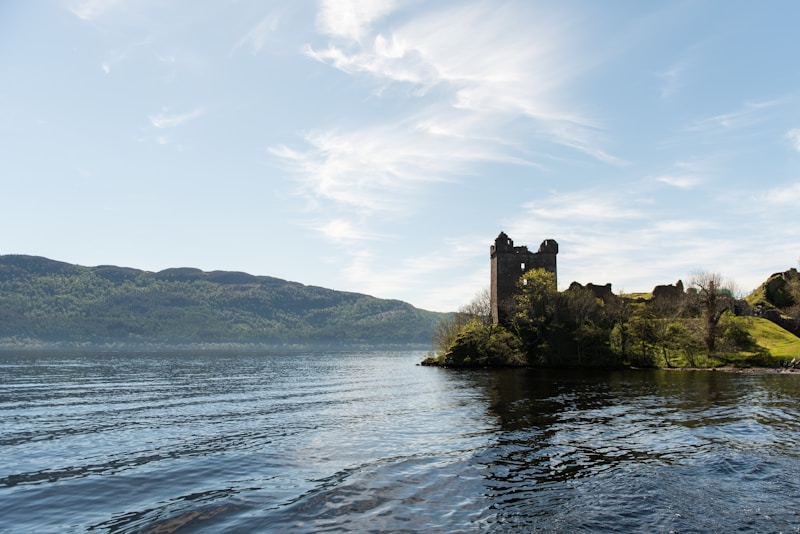
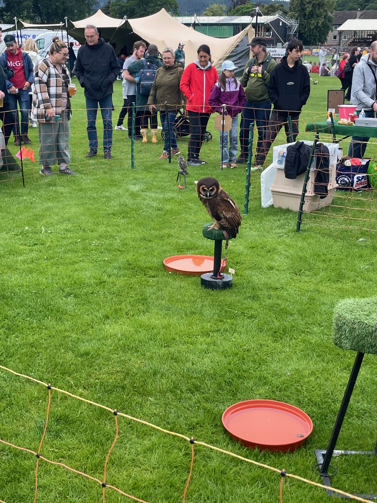

Tesco Extra — dedicated free-from section, 3 locations
M&S Food — premium "Made Without" range on High Street
Safe Cuisines
Indian — many naturally GF dishes
Thai — rice-based curries
Seafood — fresh Highland catch, naturally GF
Score Breakdown
Dedicated GF restaurants
Menu labeling
Staff knowledge & safety
Density of GF dining
Grocery availability
7/10Overall GF Score
Easy
Restaurants
12 spots
GF Score 4/5 3/5 Hotel
The Kitchen
GF Options
Modern Scottish
Went here
GF Score
Safety Notes
Right on the river, beautiful restaurant with lots of natural lighting. GF clearly marked on the menu — almost everything can be adapted. Staff have fantastic knowledge of gluten-free requirements.
What to Order
Amazing 2 or 3 course meals, reasonably priced. Seasonal dishes, seafood, and haggis (can be made GF).
What an awesome place! Coeliac UK accredited — all staff trained with separate GF preparation processes. GF pizzas served on a slate plate for identification.
What to Order
GF pizza and dough balls are a must! Also try the GF brownie dessert, risotto, and sorbets.
A rare find — an Asian restaurant where celiac diners report feeling genuinely safe. Dedicated fryer for GF tempura and battered items. Staff ask if you are celiac and flag the kitchen. Uses GF-safe soy sauce alternatives.
What to Order
GF sweet & sour chicken, chicken satay, sticky sesame chicken, GF tempura (dedicated fryer). Cocktails and desserts also available GF.
Riverside location with GF items clearly marked on the menu for celiac diners. Staff described as knowledgeable and willing to adapt dishes. GF bread and buns available.
What to Order
GF bread/buns for burgers and sandwiches, GF dessert, cider. Two-course lunch and dinner options available.
Upscale restaurant where staff are praised for "really understanding how serious coeliac disease is." They ask about your comfort level regarding cross-contamination. GF choices clearly marked on the menu.
What to Order
Steaks and fresh Highland seafood — naturally GF. Menu items vary by season, so ask about current GF options.
The chef is reportedly GF themselves, so understands allergen prevention. Dedicated GF fryer for fish & chips. Staff knowledge can vary depending on who's on shift — communicate clearly.
What to Order
GF fish & chips (separate dedicated fryer), GF Sunday roast, GF fries, GF dessert, and GF bread/buns. Many call it the "best fish and chips" they've had.
Has a separate GF toaster and cooks eggs in a pan. However, the grill is shared with gluten items — avoid grilled dishes. Staff knowledge can be inconsistent, so communicate celiac needs clearly.
What to Order
GF toast with breakfast, French toast on GF bread, GF sandwiches (hot toasted available). Stick to pan-cooked items rather than grilled.
Dedicated fryer for GF items confirmed. About half the menu is reportedly GF. Kitchen is shared but takes allergen requests seriously — good for those comfortable with dedicated-fryer prep.
What to Order
GF fish & chips and GF onion rings (both from dedicated fryer). Great views of Inverness Castle from the beer garden.
Inverness's first craft beer bar (Black Isle Brewery). GF pizza bases available — staff ask if you're celiac/allergic. However, GF pizzas are cooked in the same oven as regular pizzas, so a risk for very sensitive celiacs.
What to Order
GF pizza on GF base (26 taps to pair with!). Note: GF base contains egg. Best for the craft beer — check which are GF on tap.
Town centre bistro opposite the Castle. Has a dedicated GF fryer and knowledgeable staff. All dishes prepared to order, so modifications are straightforward.
What to Order
GF menu items from the dedicated fryer. Prosecco on tap (naturally GF) is a nice bonus. Menu changes seasonally.
Located inside the historic Victorian Market. Has a separate GF fryer with GF batter specifically made for coeliacs. Note: the GF fryer sits next to the regular fryer, which may concern very sensitive celiacs.
What to Order
GF fish & chips — fresh Peterhead haddock in GF batter with crispy skin-on fries and lemon wedge. Open Sun–Wed 12–5, Thu–Sat 11–8.
Inverness city centre is very compact — everything is within a 15-minute walk of the train station.
Bus
Stagecoach runs local routes. Useful for reaching Tesco Extra and the retail park.
Stagecoach Highlands
Bike
Ticket to Ride on Bellfield Park offers bike hire for exploring the Great Glen Way and canal paths.
Ticket to Ride rentals
Taxi
Easy to hail in the centre or book through local firms. Needed for Loch Ness day trips if not driving.
Rail Hub
Inverness is a major rail hub — ScotRail connects to Edinburgh (3.5 hrs), Glasgow (3 hrs), and the scenic Kyle of Lochalsh line to Skye.
Landmarks & Must-See Spots
2 spots
Loch Ness
Nature
Scotland's most famous loch, stretching 23 miles southwest of Inverness. Even without spotting Nessie, the drive along the shores is stunning — dark water flanked by forested hills.
20 min drive from Inverness
Went here

Bught Park & Highland Games
Nature
Large parkland on the banks of the River Ness, home to the Inverness Highland Games. Rolling pitches, traditional events, and a great atmosphere.
Riverside · Bught Park
Went here

Neighborhoods
City Centre
Historic & walkable
The compact commercial heart along High Street and Church Street. Victorian Market, most restaurants, and the train station are here. Everything you need within a few blocks.
Riverside
Scenic & peaceful
The tree-lined banks of the River Ness, connecting the city centre to the Ness Islands. Beautiful walking paths, riverside restaurants, and some of the best views in town. Where locals jog and visitors stroll.
Crown & Castle Hill
Elevated & historic
The hill above the city centre, crowned by the recently reopened Inverness Castle. Residential streets with views over the river and the Beauly Firth. Castle Tavern and the castle viewpoint are the draws.
Things to Do
Activities & Experiences
Ticket to Ride
Rental
Bike rental right on the canal path at Bellfield Park. Explore the Great Glen Way, Caledonian Canal towpath, or ride out toward Loch Ness.
The castle reopened in 2025 as a visitor attraction after a major renovation. Interactive exhibits on Highland history, panoramic city views from the tower, and a rooftop terrace.